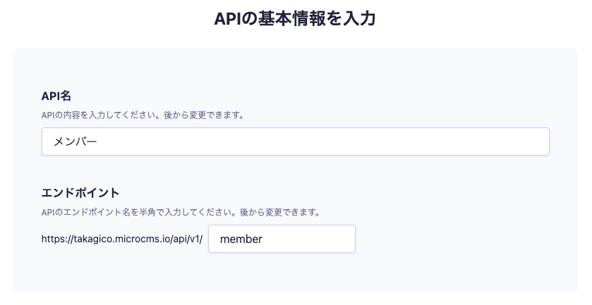
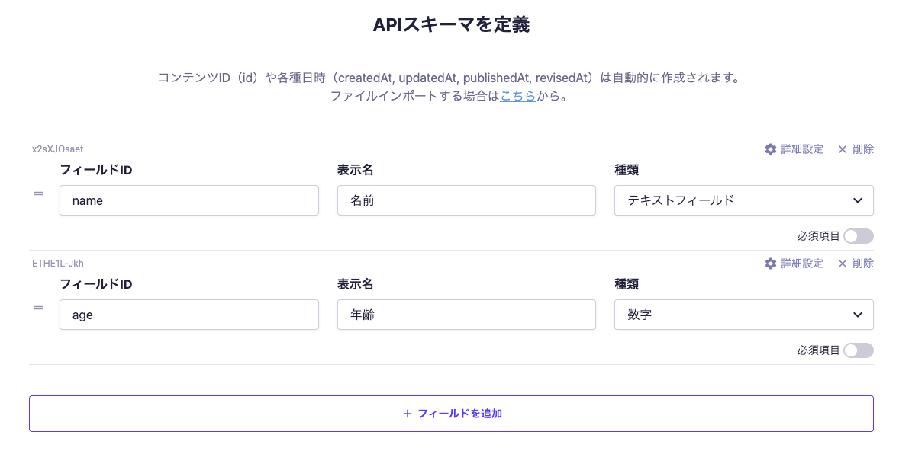
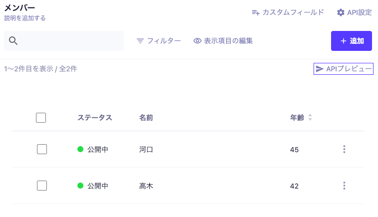

1. ヘッドレスCMSとは
フロントエンド部分の無い、バックエンド機能だけのCMSのこと。
1-1. microCMS の登録
すでにアカウントを持っている人は登録する必要はありません。周りの人に教えてあげてください。
- 公式サイトにアクセスし、「無料ではじめる」をクリック。
- メールアドレスとパスワードを入力し、同意にチェックを入れて「アカウントを登録する」をクリック。
- アンケートをスキップし「はじめる」をクリック。
- サービス名とサービスIDを入力し「サービスを作成する」をクリック。（サービスIDがURLになるので適当にしないこと）
- 登録完了！
1-2. API の作成
すでにアカウントを持っている人でAPIの枠が足りない人は作成する必要はありません。周りの人に教えてあげてください。
- 「自分で決める」をクリック。（見当たらない人は左メニューの「コンテンツ（API）」をクリック）
- API名を「メンバー」、エンドポイントを「member」にして「次へ」をクリック。

- リスト形式を選択して「次へ」をクリック。
- APIスキーマを以下のように入力して「作成」をクリック。

- 作成完了！
1-3. コンテンツの追加
- 「+ 追加」をクリック。
- 名前と年齢を自由に入力して「公開」をクリック。
- 公開中の左にある矢印をクリックして一覧に戻る。
- さらに「+ 追加」をクリックし、もう1つデータを公開しておく。
